เครื่องมือนับ dose ยาปฏิชีวนะชนิดฉีด บอกว่าผู้ป่วยได้รับยาไปแล้วกี่ dose เหลืออีกกี่ dose และ dose สุดท้ายตรงกับวันเวลาไหน พร้อม Pharmacist note ให้คัดลอกไปวางในเวชระเบียน
เปิดแอป: https://natthaphonyay-hub.github.io/atb-calculator/
ฉบับ 6 พฤศจิกายน 2569 (แอปเวอร์ชัน 5.4) ใช้ได้ทั้งมือถือและคอมพิวเตอร์ ไม่ต้องติดตั้ง ไม่ต้องสมัคร
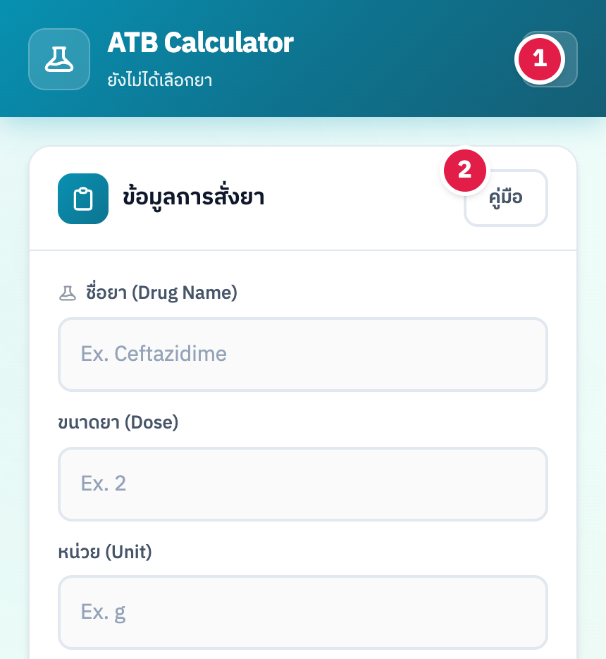
Amoxicillin + Clavulanic acid, Ceftriaxone, Ceftazidime, Metronidazole, Cefazolin, Clindamycin, Meropenem, Cloxacillin และ Tazocin (Piperacillin + tazobactam)
เลือกยาในรายการแล้วแอปเติมขนาดยาและหน่วยให้ ตรวจให้ตรงกับคำสั่งแพทย์ทุกครั้ง
ตัวอย่าง: Meropenem 1 g IV q 8 hr เริ่ม 6 พ.ย. 2569 เวลา 08:00 ทบทวนเมื่อครบ 5 วัน หยุดเมื่อครบ 7 วัน
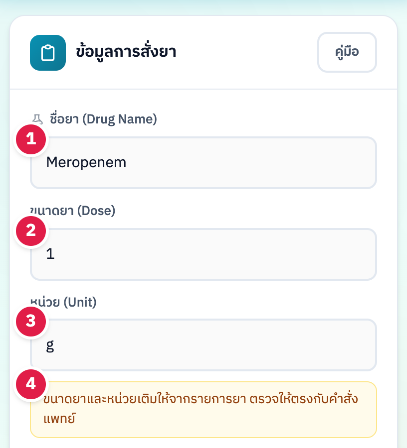
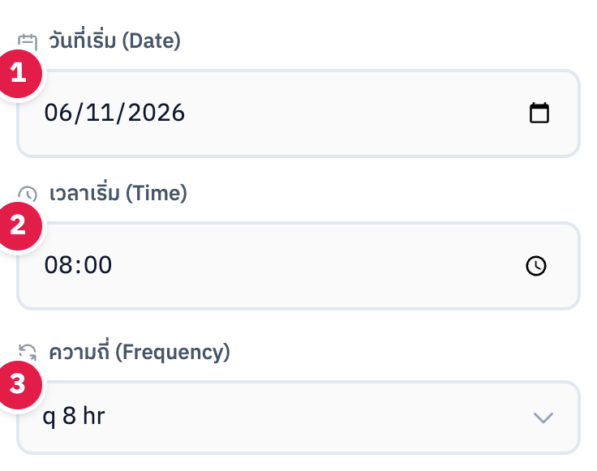
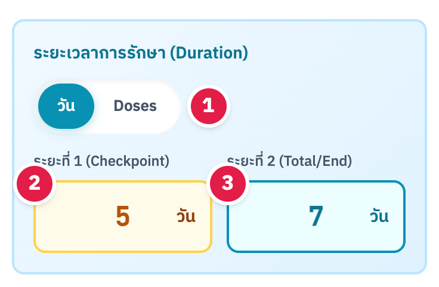
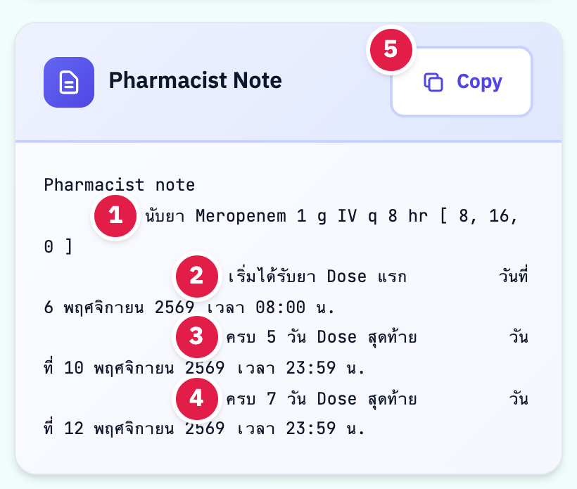
พิมพ์ชื่อยา หรือแตะเลือกจากรายการที่ขึ้นมาขณะพิมพ์
ยาในรายการ แอปเติมให้ ถ้าพิมพ์เองไว้ก่อน แอปจะไม่เขียนทับ พิมพ์เป็นข้อความอะไรก็ได้ เช่น 1-2 หรือ vial
ขึ้นเมื่อขนาดยาและหน่วยมาจากรายการ ให้ตรวจกับคำสั่งแพทย์
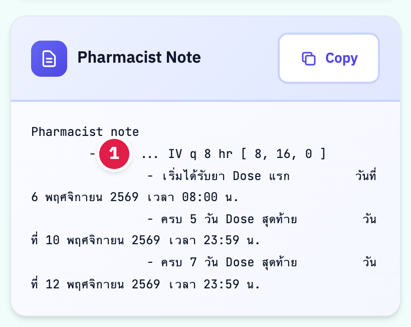
พิมพ์ชื่อยาเองได้เลย หรือเว้นว่างไว้ก็ได้ note จะเขียน 1"..." แทนชื่อยา คัดลอกไปแล้วแก้ชื่อยาเองในเวชระเบียน
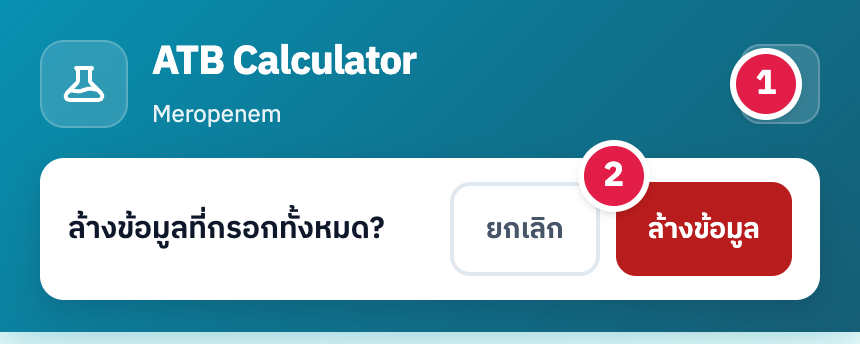
1กดปุ่มลูกศรวน แอปจะถามในหน้า 2กด "ล้างข้อมูล" เพื่อยืนยัน หรือ "ยกเลิก" (กด Esc ก็ได้)
ล้างแล้ววันเวลาเริ่มกลับเป็นค่าตั้งต้น ความถี่ q 8 hr ระยะเวลา 5 กับ 7 วัน
วันเวลาที่ให้ยา dose แรก เปิดแอปมาจะใส่วันนี้และเวลาโดยประมาณไว้ให้ แก้ให้ตรงกับ order ทุกครั้ง
q 4 hr, q 6 hr, q 8 hr, q 12 hr, OD หรือ q 48 hr
เลือกว่าจะนับระยะเวลาเป็นวันหรือเป็นจำนวน dose สลับแล้วแอปแปลงตัวเลขให้ เช่น 7 วันที่ q 8 hr เป็น 21 dose ถ้าแปลงเป็นวันเต็มไม่ได้ แอปจะล้างช่องนั้นและบอกให้ใส่ใหม่
จุดที่ต้องทบทวนยา ใส่หรือไม่ใส่ก็ได้
วันหยุดยา ต้องใส่
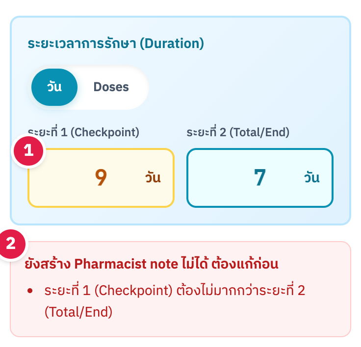
ถ้า1ระยะที่ 1 มากกว่าระยะที่ 2, ใส่ทศนิยม, ใส่ 0 หรือติดลบ, ใส่เกิน 365 วัน หรือเว้นวันเวลาเริ่ม แอปจะ2บอกว่าต้องแก้อะไร และยังไม่ออก note จนกว่าจะแก้
ชื่อยา ขนาด หน่วย ความถี่ และเวลาให้ยาในวงเล็บ เช่น [ 8, 16, 0 ]
วันและเวลาเริ่มที่กรอก
วันเวลาของ dose สุดท้ายเมื่อครบ 5 วัน
วันเวลาของ dose สุดท้ายเมื่อครบ 7 วัน ถ้านับเป็นจำนวน dose บรรทัดนี้จะเขียนว่า Dose ที่ ...
คัดลอกทั้งข้อความ แล้ววางในเวชระเบียน
dose ที่แอปคำนวณแล้วตกเวลา 00:00 จะแสดงเป็น 23:59 ของวันก่อน เพื่อไม่ให้สับสนว่าเป็นวันไหน ใช้แบบเดียวกันทั้ง note ตาราง สรุป ความคืบหน้า และข้อความที่คัดลอก
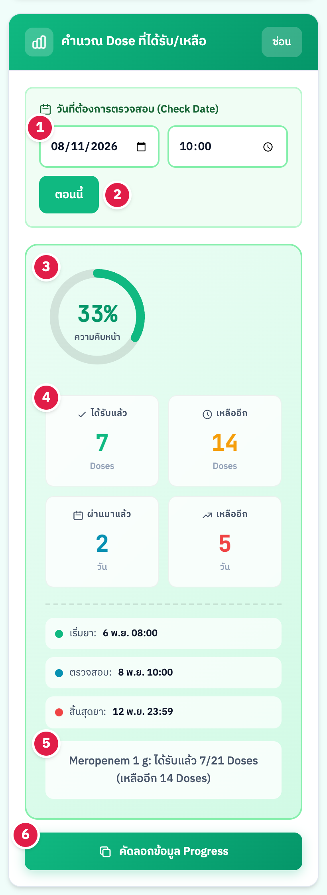
เช่น เวลาราวด์ หรือเวลาที่ถูกถาม
ใส่วันเวลาปัจจุบันในครั้งเดียว เปิดแอปมาจะเป็นเวลาปัจจุบันอยู่แล้ว
ร้อยละของ dose ที่ได้รับแล้ว
ได้รับแล้ว (dose) เหลืออีก (dose) ผ่านมาแล้ว (วัน) และเหลืออีก (วัน)
เช่น Meropenem 1 g: ได้รับแล้ว 7/21 Doses (เหลืออีก 14 Doses)
คัดลอกสรุปความคืบหน้าไปวาง
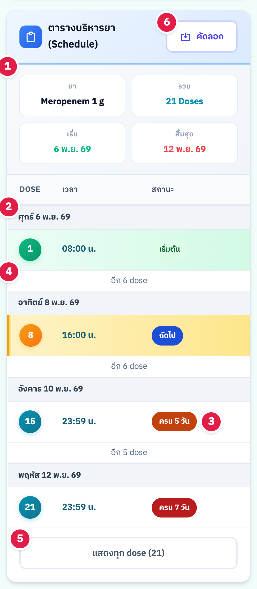
ยา รวมกี่ dose วันเริ่ม และวันสิ้นสุด
แบ่ง dose ตามวัน มีชื่อวันในสัปดาห์
แถวเดียวมีหลายป้ายได้ เช่น dose ที่ครบ 5 วันและเป็น dose ถัดไปด้วย
จำนวน dose ที่ย่อไว้ระหว่าง dose สำคัญ
กดดูตารางเต็ม กดอีกครั้งเพื่อย่อ
คัดลอกเวลาให้ยาทุก dose
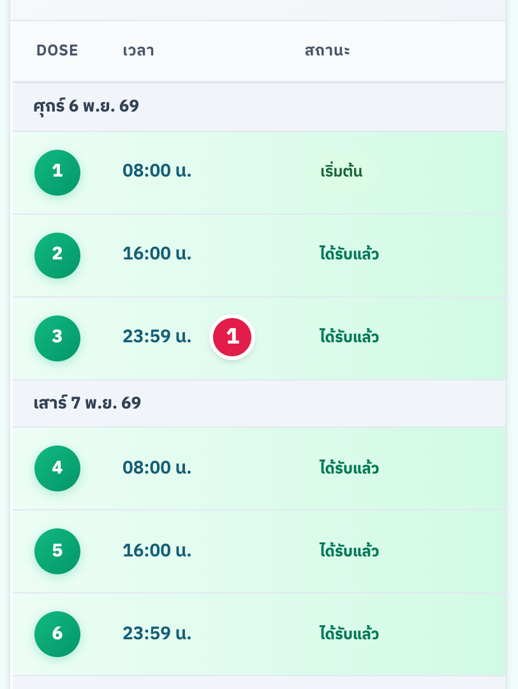
แถวสีเขียวคือได้รับแล้ว แถวสีเหลืองคือ dose ถัดไป
1dose ที่ตกเที่ยงคืนแสดง 23:59 อยู่ในวันเดียวกับ dose ก่อนหน้า
Meropenem 1 g IV q 8 hr เริ่ม 6 พ.ย. 2569 เวลา 08:00 ระยะที่ 1 = 5 วัน ระยะที่ 2 = 7 วัน
ผล: รวม 21 dose ครบ 5 วันที่ 10 พ.ย. 2569 เวลา 23:59 และครบ 7 วันที่ 12 พ.ย. 2569 เวลา 23:59
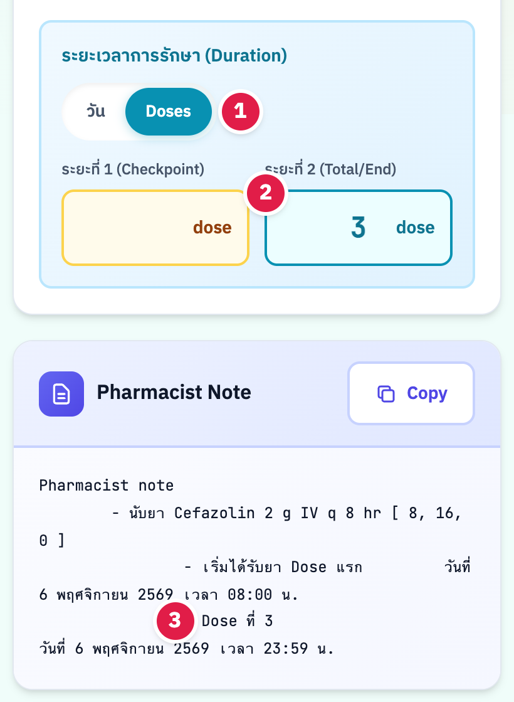
Cefazolin 2 g IV q 8 hr ให้ 3 dose: แตะ Doses เว้นระยะที่ 1 ใส่ระยะที่ 2 = 3
ผล: Dose ที่ 3 วันที่ 6 พ.ย. 2569 เวลา 23:59
order เดียวกับกรณีที่ 1 ตรวจวันที่ 8 พ.ย. 2569 เวลา 10:00
ผล: ได้รับแล้ว 7 จาก 21 dose เหลือ 14 dose ผ่านมาแล้ว 2 วัน เหลืออีก 5 วัน
เว้นชื่อยาไว้ ใส่วันเวลาเริ่ม ความถี่ และระยะเวลาตามปกติ
ผล: note เขียน "นับยา ... IV q 8 hr" คัดลอกไปแล้วแก้ชื่อยาเอง
ใส่ระยะที่ 1 = 9 วัน มากกว่าระยะที่ 2 = 7 วัน
ผล: แอปบอกว่า "ระยะที่ 1 (Checkpoint) ต้องไม่มากกว่าระยะที่ 2 (Total/End)" และยังไม่ออก note